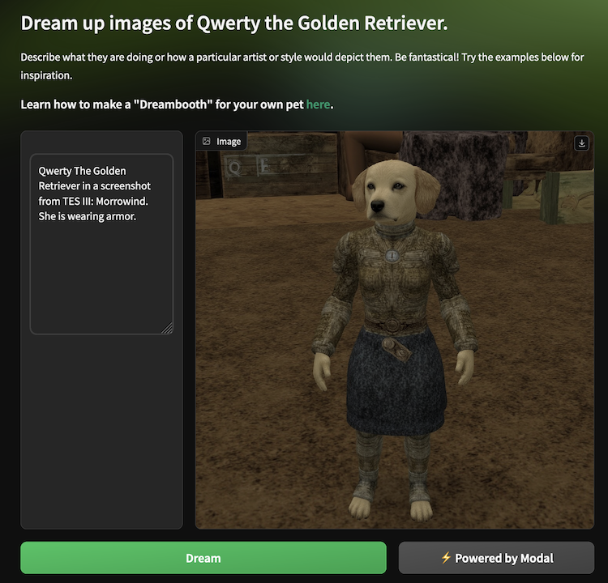

Fine-tune Flux on your pet using LoRA
This example finetunes the Flux.1-dev model on images of a pet (by default, a puppy named Qwerty) using a technique called textual inversion from the “Dreambooth” paper. Effectively, it teaches a general image generation model a new “proper noun”, allowing for the personalized generation of art and photos. We supplement textual inversion with low-rank adaptation (LoRA) for increased efficiency during training.
It then makes the model shareable with others — without costing $25/day for a GPU server— by hosting a Gradio app on Modal.
It demonstrates a simple, productive, and cost-effective pathway to building on large pretrained models using Modal’s building blocks, like GPU-accelerated Modal Functions for compute-intensive work, Volumes for storage, and Web Functions for serving.
And with some light customization, you can use it to generate images of your pet!

You can find a video walkthrough of this example on the Modal YouTube channel here.
Imports and setup
We start by importing the necessary libraries and setting up the environment.
from dataclasses import dataclass
from pathlib import Path
import modalBuilding up the environment
Machine learning environments are complex, and the dependencies can be hard to manage. Modal makes creating and working with environments easy via containers and container images.
We start from a base image and specify all of our dependencies. We’ll call out the interesting ones as they come up below. Note that these dependencies are not installed locally — they are only installed in the remote environment where our Modal App runs.
app = modal.App(name="example-diffusers-lora-finetune")
image = modal.Image.debian_slim(python_version="3.10").uv_pip_install(
"accelerate==0.31.0",
"datasets~=2.13.0",
"fastapi[standard]==0.115.4",
"ftfy~=6.1.0",
"gradio~=5.5.0",
"huggingface-hub==0.36.0",
"numpy<2",
"peft==0.11.1",
"pydantic==2.9.2",
"sentencepiece>=0.1.91,!=0.1.92",
"smart_open~=6.4.0",
"starlette==0.41.2",
"transformers~=4.41.2",
"torch~=2.2.0",
"torchvision~=0.16",
"triton~=2.2.0",
"wandb==0.17.6",
)Downloading scripts and installing a git repo with run_commands
We’ll use an example script from the diffusers library to train the model.
We acquire it from GitHub and install it in our environment with a series of commands.
The container environments Modal Functions run in are highly flexible —
see the docs for more details.
GIT_SHA = "e649678bf55aeaa4b60bd1f68b1ee726278c0304" # specify the commit to fetch
image = (
image.apt_install("git")
# Perform a shallow fetch of just the target `diffusers` commit, checking out
# the commit in the container's home directory, /root. Then install `diffusers`
.run_commands(
"cd /root && git init .",
"cd /root && git remote add origin https://github.com/huggingface/diffusers",
f"cd /root && git fetch --depth=1 origin {GIT_SHA} && git checkout {GIT_SHA}",
"cd /root && pip install -e .",
)
)Configuration with dataclasses
Machine learning apps often have a lot of configuration information. We collect up all of our configuration into dataclasses to avoid scattering special/magic values throughout code.
@dataclass
class SharedConfig:
"""Configuration information shared across project components."""
# The instance name is the "proper noun" we're teaching the model
instance_name: str = "Qwerty"
# That proper noun is usually a member of some class (person, bird),
# and sharing that information with the model helps it generalize better.
class_name: str = "Golden Retriever"
# identifier for pretrained models on Hugging Face
model_name: str = "black-forest-labs/FLUX.1-dev"Storing data created by our app with modal.Volume
The tools we’ve used so far work well for fetching external information,
which defines the environment our app runs in,
but what about data that we create or modify during the app’s execution?
A persisted modal.Volume can store and share data across Modal Apps and Functions.
We’ll use one to store both the original and fine-tuned weights we create during training and then load them back in for inference. For more on storing model weights on Modal, see this guide.
volume = modal.Volume.from_name(
"dreambooth-finetuning-volume-flux", create_if_missing=True
)
MODEL_DIR = "/model"Note that access to the Flux.1-dev model on Hugging Face is gated by a license agreement which
you must agree to here.
After you have accepted the license, create a Modal Secret with the name huggingface-secret following the instructions in the template.
huggingface_secret = modal.Secret.from_name(
"huggingface-secret", required_keys=["HF_TOKEN"]
)
image = image.env(
{"HF_XET_HIGH_PERFORMANCE": "1"} # turn on faster downloads from HF
)
@app.function(
volumes={MODEL_DIR: volume},
image=image,
secrets=[huggingface_secret],
timeout=600, # 10 minutes
)
def download_models(config):
import torch
from diffusers import DiffusionPipeline
from huggingface_hub import snapshot_download
snapshot_download(
config.model_name,
local_dir=MODEL_DIR,
ignore_patterns=["*.pt", "*.bin"], # using safetensors
)
DiffusionPipeline.from_pretrained(MODEL_DIR, torch_dtype=torch.bfloat16)Load fine-tuning dataset
Part of the magic of the low-rank fine-tuning is that we only need 3-10 images for fine-tuning. So we can fetch just a few images, stored on consumer platforms like Imgur or Google Drive, whenever we need them — no need for expensive, hard-to-maintain data pipelines.
def load_images(image_urls: list[str]) -> Path:
import PIL.Image
from smart_open import open
img_path = Path("/img")
img_path.mkdir(parents=True, exist_ok=True)
for ii, url in enumerate(image_urls):
with open(url, "rb") as f:
image = PIL.Image.open(f)
image.save(img_path / f"{ii}.png")
print(f"{ii + 1} images loaded")
return img_pathLow-Rank Adaptation (LoRA) fine-tuning for a text-to-image model
The base model we start from is trained to do a sort of “reverse ekphrasis”: it attempts to recreate a visual work of art or image from only its description.
We can use the model to synthesize wholly new images by combining the concepts it has learned from the training data.
We use a pretrained model, the Flux model from Black Forest Labs. In this example, we “finetune” Flux, making only small adjustments to the weights. Furthermore, we don’t change all the weights in the model. Instead, using a technique called low-rank adaptation, we change a much smaller matrix that works “alongside” the existing weights, nudging the model in the direction we want.
We can get away with such a small and simple training process because we’re just teach the model the meaning of a single new word: the name of our pet.
The result is a model that can generate novel images of our pet: as an astronaut in space, as painted by Van Gogh or Bastiat, etc.
Finetuning with Hugging Face 🧨 Diffusers and Accelerate
The model weights, training libraries, and training script are all provided by 🤗 Hugging Face.
You can kick off a training job with the command modal run dreambooth_app.py::app.train.
It should take about ten minutes.
Training machine learning models takes time and produces a lot of metadata — metrics for performance and resource utilization, metrics for model quality and training stability, and model inputs and outputs like images and text. This is especially important if you’re fiddling around with the configuration parameters.
This example can optionally use Weights & Biases to track all of this training information. Just sign up for an account, switch the flag below, and add your API key as a Modal Secret.
USE_WANDB = FalseYou can see an example W&B dashboard here. Check out this run, which despite having high GPU utilization suffered from numerical instability during training and produced only black images — hard to debug without experiment management logs!
You can read more about how the values in TrainConfig are chosen and adjusted in this blog post on Hugging Face.
To run training on images of your own pet, upload the images to separate URLs and edit the contents of the file at TrainConfig.instance_example_urls_file to point to them.
Tip: if the results you’re seeing don’t match the prompt too well, and instead produce an image
of your subject without taking the prompt into account, the model has likely overfit. In this case, repeat training with a lower
value of max_train_steps. If you used W&B, look back at results earlier in training to determine where to stop.
On the other hand, if the results don’t look like your subject, you might need to increase max_train_steps.
@dataclass
class TrainConfig(SharedConfig):
"""Configuration for the finetuning step."""
# training prompt looks like `{PREFIX} {INSTANCE_NAME} the {CLASS_NAME} {POSTFIX}`
prefix: str = "a photo of"
postfix: str = ""
# locator for plaintext file with urls for images of target instance
instance_example_urls_file: str = str(
Path(__file__).parent / "instance_example_urls.txt"
)
# Hyperparameters/constants from the huggingface training example
resolution: int = 512
train_batch_size: int = 3
rank: int = 16 # lora rank
gradient_accumulation_steps: int = 1
learning_rate: float = 4e-4
lr_scheduler: str = "constant"
lr_warmup_steps: int = 0
max_train_steps: int = 500
checkpointing_steps: int = 1000
seed: int = 117
@app.function(
image=image,
gpu="A100-80GB", # fine-tuning is VRAM-heavy and requires a high-VRAM GPU
volumes={MODEL_DIR: volume}, # stores fine-tuned model
timeout=1800, # 30 minutes
secrets=[huggingface_secret]
+ (
[modal.Secret.from_name("wandb-secret", required_keys=["WANDB_API_KEY"])]
if USE_WANDB
else []
),
)
def train(instance_example_urls, config):
import subprocess
from accelerate.utils import write_basic_config
# load data locally
img_path = load_images(instance_example_urls)
# set up hugging face accelerate library for fast training
write_basic_config(mixed_precision="bf16")
# define the training prompt
instance_phrase = f"{config.instance_name} the {config.class_name}"
prompt = f"{config.prefix} {instance_phrase} {config.postfix}".strip()
# the model training is packaged as a script, so we have to execute it as a subprocess, which adds some boilerplate
def _exec_subprocess(cmd: list[str]):
"""Executes subprocess and prints log to terminal while subprocess is running."""
process = subprocess.Popen(
cmd,
stdout=subprocess.PIPE,
stderr=subprocess.STDOUT,
)
with process.stdout as pipe:
for line in iter(pipe.readline, b""):
line_str = line.decode()
print(f"{line_str}", end="")
if exitcode := process.wait() != 0:
raise subprocess.CalledProcessError(exitcode, "\n".join(cmd))
# run training -- see huggingface accelerate docs for details
print("launching dreambooth training script")
_exec_subprocess(
[
"accelerate",
"launch",
"examples/dreambooth/train_dreambooth_lora_flux.py",
"--mixed_precision=bf16", # half-precision floats most of the time for faster training
f"--pretrained_model_name_or_path={MODEL_DIR}",
f"--instance_data_dir={img_path}",
f"--output_dir={MODEL_DIR}",
f"--instance_prompt={prompt}",
f"--resolution={config.resolution}",
f"--train_batch_size={config.train_batch_size}",
f"--gradient_accumulation_steps={config.gradient_accumulation_steps}",
f"--learning_rate={config.learning_rate}",
f"--lr_scheduler={config.lr_scheduler}",
f"--lr_warmup_steps={config.lr_warmup_steps}",
f"--max_train_steps={config.max_train_steps}",
f"--checkpointing_steps={config.checkpointing_steps}",
f"--seed={config.seed}", # increased reproducibility by seeding the RNG
]
+ (
[
"--report_to=wandb",
# validation output tracking is useful, but currently broken for Flux LoRA training
# f"--validation_prompt={prompt} in space", # simple test prompt
# f"--validation_epochs={config.max_train_steps // 5}",
]
if USE_WANDB
else []
),
)
# The trained model information has been output to the volume mounted at `MODEL_DIR`.
# To persist this data for use in our web app, we 'commit' the changes
# to the volume.
volume.commit()Running our model
To generate images from prompts using our fine-tuned model, we define a Modal Function called inference.
Naively, this would seem to be a bad fit for the flexible, serverless infrastructure of Modal: wouldn’t you need to include the steps to load the model and spin it up in every function call?
In order to initialize the model just once on container startup,
we use Modal’s container lifecycle features, which require the function to be part
of a class. Note that the modal.Volume we saved the model to is mounted here as well,
so that the fine-tuned model created by train is available to us.
@app.cls(image=image, gpu="A100", volumes={MODEL_DIR: volume})
class Model:
@modal.enter()
def load_model(self):
import torch
from diffusers import DiffusionPipeline
# Reload the modal.Volume to ensure the latest state is accessible.
volume.reload()
# set up a hugging face inference pipeline using our model
pipe = DiffusionPipeline.from_pretrained(
MODEL_DIR,
torch_dtype=torch.bfloat16,
).to("cuda")
pipe.load_lora_weights(MODEL_DIR)
self.pipe = pipe
@modal.method()
def inference(self, text, config):
image = self.pipe(
text,
num_inference_steps=config.num_inference_steps,
guidance_scale=config.guidance_scale,
).images[0]
return imageWrap the trained model in a Gradio web UI
Gradio makes it super easy to expose a model’s functionality in an easy-to-use, responsive web interface.
This model is a text-to-image generator, so we set up an interface that includes a user-entry text box and a frame for displaying images.
We also provide some example text inputs to help guide users and to kick-start their creative juices.
And we couldn’t resist adding some Modal style to it as well!
You can deploy the app on Modal with the command modal deploy dreambooth_app.py.
You’ll be able to come back days, weeks, or months later and find it still ready to go,
even though you don’t have to pay for a server to run while you’re not using it.
@dataclass
class AppConfig(SharedConfig):
"""Configuration information for inference."""
num_inference_steps: int = 50
guidance_scale: float = 6
web_image = image.add_local_dir(
# Add local web assets to the image
Path(__file__).parent / "assets",
remote_path="/assets",
)
@app.function(
image=web_image,
max_containers=1,
)
@modal.concurrent(max_inputs=100)
@modal.asgi_app()
def fastapi_app():
import gradio as gr
from fastapi import FastAPI
from fastapi.responses import FileResponse
from gradio.routes import mount_gradio_app
web_app = FastAPI()
# Call out to the inference in a separate Modal environment with a GPU
def go(text=""):
if not text:
text = example_prompts[0]
return Model().inference.remote(text, config)
# set up AppConfig
config = AppConfig()
instance_phrase = f"{config.instance_name} the {config.class_name}"
example_prompts = [
f"{instance_phrase}",
f"a painting of {instance_phrase.title()} With A Pearl Earring, by Vermeer",
f"oil painting of {instance_phrase} flying through space as an astronaut",
f"a painting of {instance_phrase} in cyberpunk city. character design by cory loftis. volumetric light, detailed, rendered in octane",
f"drawing of {instance_phrase} high quality, cartoon, path traced, by studio ghibli and don bluth",
]
modal_docs_url = "https://modal.com/docs"
modal_example_url = f"{modal_docs_url}/examples/dreambooth_app"
description = f"""Describe what they are doing or how a particular artist or style would depict them. Be fantastical! Try the examples below for inspiration.
### Learn how to make a "Dreambooth" for your own pet [here]({modal_example_url}).
"""
# custom styles: an icon, a background, and a theme
@web_app.get("/favicon.ico", include_in_schema=False)
async def favicon():
return FileResponse("/assets/favicon.svg")
@web_app.get("/assets/background.svg", include_in_schema=False)
async def background():
return FileResponse("/assets/background.svg")
with open("/assets/index.css") as f:
css = f.read()
theme = gr.themes.Default(
primary_hue="green", secondary_hue="emerald", neutral_hue="neutral"
)
# add a gradio UI around inference
with gr.Blocks(
theme=theme,
css=css,
title=f"Generate images of {config.instance_name} on Modal",
) as interface:
gr.Markdown(
f"# Generate images of {instance_phrase}.\n\n{description}",
)
with gr.Row():
inp = gr.Textbox( # input text component
label="",
placeholder=f"Describe the version of {instance_phrase} you'd like to see",
lines=10,
)
out = gr.Image( # output image component
height=512, width=512, label="", min_width=512, elem_id="output"
)
with gr.Row():
btn = gr.Button("Dream", variant="primary", scale=2)
btn.click(
fn=go, inputs=inp, outputs=out
) # connect inputs and outputs with inference function
gr.Button( # shameless plug
"⚡️ Powered by Modal",
variant="secondary",
link="https://modal.com",
)
with gr.Column(variant="compact"):
# add in a few examples to inspire users
for ii, prompt in enumerate(example_prompts):
btn = gr.Button(prompt, variant="secondary")
btn.click(fn=lambda idx=ii: example_prompts[idx], outputs=inp)
# mount for execution on Modal
return mount_gradio_app(
app=web_app,
blocks=interface,
path="/",
)Running your fine-tuned model from the command line
You can use the modal command-line interface to set up, customize, and deploy this app:
modal run diffusers_lora_finetune.pywill train the model. Change theinstance_example_urls_fileto point to your own pet’s images.modal serve diffusers_lora_finetune.pywill serve the Gradio interface at a temporary location. Great for iterating on code!modal shell diffusers_lora_finetune.pyis a convenient helper to open a bash shell in our image. Great for debugging environment issues.
Remember, once you’ve trained your own fine-tuned model, you can deploy it permanently — for no cost when it is not being used! —
using modal deploy diffusers_lora_finetune.py.
If you just want to try the app out, you can find our deployment here.
@app.local_entrypoint()
def run( # add more config params here to make training configurable
max_train_steps: int = 250,
):
print("🎨 loading model")
download_models.remote(SharedConfig())
print("🎨 setting up training")
config = TrainConfig(max_train_steps=max_train_steps)
instance_example_urls = (
Path(TrainConfig.instance_example_urls_file).read_text().splitlines()
)
train.remote(instance_example_urls, config)
print("🎨 training finished")